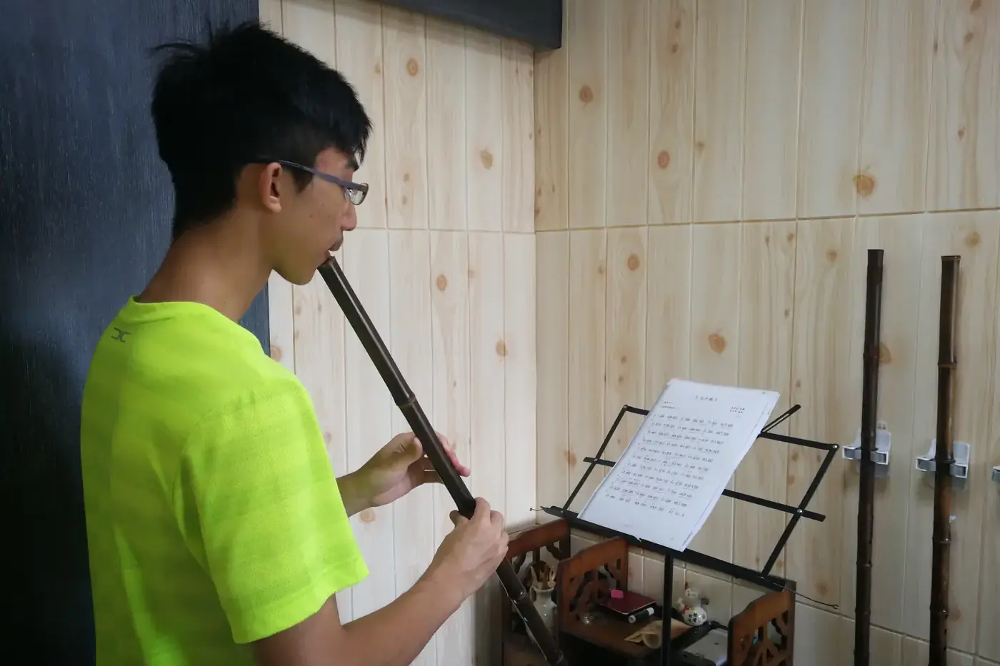

洞簫長音要分三段聽：聲音怎樣開始，中段能否保持，末尾怎樣離開。慢板則要在心裏保持細拍，旋律才不會因為慢而散掉。

長音吹了很久，秒數也破了紀錄，第二天聲音卻和昨天一樣。問題多半出在只顧吹長，耳朵沒有工作。
長音的三段時間，各聽甚麼？
選舒服音區的一個音，先定好吹幾拍，長度以自然呼吸承受得來為準。不要為了破紀錄撐到底，嘴唇和身體一起緊起來就白練了。短而清楚的長音，一樣有練習價值。
第一段聽反應。每次都要先吹出一陣風，才慢慢找到聲音嗎？這樣的話，改做幾個短音，檢查吹口位置。音頭練自然了才延伸，不必每次由不穩的音頭硬撐下去。
中段聽音量和音高有沒有忽然改變。可以用錄音或可靠的參考音輔助，也可以開調音器，但別同時盯太多數值。這一遍只聽音色，下一遍才看音準。
末段仍然屬於音樂。收音不應只是氣用完的結果，所以要預先決定在哪一拍結束，留足餘地完成它。尾音總是掉下去，就先縮短一拍，學會完整收住，再逐步延長。
慢練怎樣變成音樂？
長音若只為吹長，很容易變成無目的重複。分得開三段之後，要練的是耳朵：聲音薄、散、硬，和真正穩的分別，要自己分得出。
給一個長音安排自然的起點、平穩的中段和清楚的收尾，先不加入刻意起伏。每次只比較一個細節，錄下來對比。
穩定之後，試一種輕微的力度變化，聽它是否仍有方向。
下一步是把同一個音放回曲中。長音接進樂句時，前後的音仍要有關係，練出來的線條要延續得到。一個漂亮的孤立聲音，還未算音樂；曲裏的長音吹過之後，聽聽前後句子有沒有因此連貫一點。
慢不是拖，是聽得更清楚
慢速若沒有方向，只會越吹越散。慢練的用處，是把原來聽不清的動作變得明白。
選一個略慢、仍能自然呼吸的速度。慢到自然動作完全改變，就重新選速度。
每遍只留一個問題，音色、拍子或換氣之中揀一項，例如某次換氣有沒有打斷旋律。吹完便說出答案，不要含糊帶過。
吹着吹着失去方向，先唱出句子，再吹一次比較。
加回原速時，檢查剛才的改善留不留得住。慢練得來的東西，到底要帶回作品的時間和語氣裏。
慢板也有腳步
慢曲最難的地方，有時是每一拍都太長，長得讓人忘了下一拍。洞簫慢板要靠內在步伐：把大拍分成較小的脈動，長音、休止、換氣和入口才保持得住關係。
先用手輕拍穩定節奏，再把樂句哼進去。只唱不拍便越來越慢的話，你依賴的可能是每個音的感覺，整句還未有共同的時間。
遇到兩拍或四拍的長音，在心裏數較小的單位，知道自己走到哪裏。這些細分是內部的路標，不一定要讓聽者聽見，更不應把長音吹成斷續的小塊。
短句可以先跟節拍器練，再關掉重做，比較長度是否相近。一關掉便明顯拖慢，就縮短段落，重新建立時間感，不必把整首曲都交給節拍器帶着走。
句子也要有目的地。在譜上找一個主要音，讓前面的音逐步走向它，慢曲一樣有張力和放鬆。每個音都當成終點，句子便像走一步停一步。
兩個版本錄下來比較
錄兩個版本：一個只顧慢，一個保留內在細拍和樂句方向。回聽時不必先評哪個較美，只問哪個更容易聽懂。
從容的演奏，腳步一樣穩定，所以才有餘地留意沿途的聲音。
常見問題
洞簫長音要吹多少秒才算好？
不用以秒數計。長度以舒服完成為準，重點是音頭、中段、收音各自聽得清楚，尾音收得完整。
慢練時可以一直開節拍器嗎？
可以用來建立時間感，但要關掉再做一次比較。一關掉便拖慢，表示時間感仍靠機器，要縮短段落再練。
尾音總是塌下來，怎麼辦？
多半是吹到氣盡才收。先縮短一拍，預先定好結束的拍點，能完整收住再逐步延長。
選一個舒服的音，定好四拍，只聽收音收得完不完整，連續錄三次回聽。也可以用長音練習配合。第一個音還未穩的話，先看洞簫的氣：第一個音、口風與呼吸。